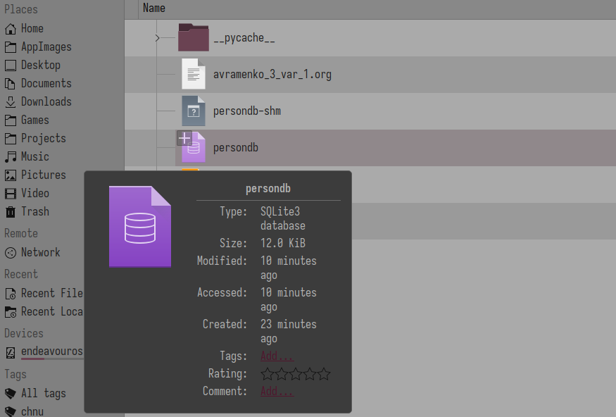

ООП: розробка сховища даних
Table of Contents
1. 6.2 Дослідження сховища в інтерактивному сеансі.
Маємо у поточному робочому каталозі один або більше файлів, імена яких
розпочинаються з «persondb». Реально створювані файли можуть відрізнятися в
залежності від платформи, функція shelve.open() створює файли в поточному
робочому каталозі, якщо вказане ім'я файлу не містить повний шлях. Але незалежно
від того, де зберігаються ці файли, вони забезпечують доступ по ключу до подання
об'єктів, створених за допомогою модуля pickle. Не видаляйте ці файли – вони є
базою даних, яку доведеться копіювати або переміщувати, коли ви будете
створювати резервні копії вашого сховища або переносити його. Можна заглянути
всередину файлів сховищ за допомогою файлового менеджера (наприклад Dolphin на
GNU/Linux) або за допомогою інтерактивної оболонки Python, проте ці файли
мають двійковий формат і їх вміст не має великого сенсу поза модуль shelve.
Наша БД зберігається в трьох файлах (модуль bsddb є стороннім доповненням, яке
поширюють з відкритими вихідними текстами):
# Модуль, який дозволяє отримати список файлів у каталозі: # перевірка наявності файлів >>> import glob >>> glob.glob(‗person*‘) [‗person.py‘,‗person.pyc‘,‗persondb.bak‘,‗persondb.dat‘,‗persondb.dir‘] # Тип файлу: текстовий – для рядків, бінарний – для байтів >>> print(open(‗persondb.dir‘).read()) ‗Tom Jones‘, (1024, 91) ...частину рядків опущено... >>> print(open(‗persondb.dat‘, ‗rb‘).read()) b‘\x80\x03cperson\nPerson\nq\x00)\x81q\x01}q\x02(X\x03\x00\x00\x00 payq\x03K... ...частину рядків опущено...
2. 6.2 !!!ВІДХОДЖУ ВІД ПРИЛКЛАДУ ЛАБОРАТОНОЇ РОБОТИ!!!
При запуску запропонованого коду отримую інший результат.
❯ python3 Python 3.13.2 (main, Feb 5 2025, 08:05:21) [GCC 14.2.1 20250128] on linux Type "help", "copyright", "credits" or "license" for more information. >>> import glob >>> glob.glob('person*') ['persondb-wal', 'persondb-shm', 'persondb', 'person.py'] >>> print(open('persondb.dir').read() ... ) Traceback (most recent call last): File "<python-input-2>", line 1, in <module> print(open('persondb.dir').read() ~~~~^^^^^^^^^^^^^^^^ FileNotFoundError: [Errno 2] No such file or directory: 'persondb.dir' >>> print(open('persondb').read()) Traceback (most recent call last): File "<python-input-3>", line 1, in <module> print(open('persondb').read()) ~~~~~~~~~~~~~~~~~~~~~^^ File "<frozen codecs>", line 325, in decode UnicodeDecodeError: 'utf-8' codec can't decode byte 0x86 in position 98: invalid start byte >>> print(open('persondb-shm').read()) Traceback (most recent call last): File "<python-input-4>", line 1, in <module> print(open('persondb-shm').read()) ~~~~~~~~~~~~~~~~~~~~~~~~~^^ File "<frozen codecs>", line 325, in decode UnicodeDecodeError: 'utf-8' codec can't decode byte 0xe2 in position 1: invalid continuation byte
ЧИМ ЦЕ ВИКЛИКАНО?
Різниця у файлах, що створюються, викликана тим, що на Windows shelve
використовує dumbdbm або dbm залежно від доступності, тоді як на Linux він
зазвичай використовує dbm.gnu або dbm.ndbm. У моєму випадку shelve створило
один файл persondb і додаткові persondb-wal та persondb-shm, що свідчить про
використання SQLite як бекенду.
- Використання
SQLiteяк бекенду підтверджує відображення типу у файловому менеджеріDolphin: 
Щоб перевірити вміст бази даних, замість відкриття .dir чи .dat я отримую
дані через shelve:
>>> import shelve >>> db = shelve.open("persondb") >>> for key in db: ... print(key,"=>",db[key]) ... db.close() ... Bob Smith => Bob Smith, None, 0.0 Sue Jones => Sue Jones, dev, 100000.0 Tom Jones => Tom Jones, mgr, 50000.0 >>>
Цей метод кросплатформений і правильно працюватиме незалежно від того, який бекенд shelve використовує під капотом.
3. 6.2 Продовження
Щоб перевірити результат, напишемо ще один сценарій. Нижче наведено лістинг
інтерактивного сеансу, який виконує роль клієнта БД (файл travaille.py):
>>> db=shelve.open('persondb', 'r') # відкрити сховище >>> print(len(db)) # у сховищі маємо три ‗записи‘ 3 >>> print(list(db.keys())) # keys – це заголовок ['Bob Smith', 'Sue Jones', 'Tom Jones'] >>> bob=db['Bob Smith'] # витягти об‘єкт bob за ключем >>> print(bob) # викличе метод __str__ Bob Smith, None, 0.0 >>> print(bob.lastName()) # Викличе lastName з класу Person Smith >>> for key in db: # Ітерації, витягання, виведення ... print(key, '=>', db[key]) ... Bob Smith => Bob Smith, None, 0.0 Sue Jones => Sue Jones, dev, 100000.0 Tom Jones => Tom Jones, mgr, 50000.0 >>> for key in sorted(db): ... print(key,'=>',db[key]) #Ітерації через відсортований список ключів ... Bob Smith => Bob Smith, None, 0.0 Sue Jones => Sue Jones, dev, 100000.0 Tom Jones => Tom Jones, mgr, 50000.0 >>>
Коли модуль pickle перетворює екземпляр класу, він записує атрибути екземпляру self разом з ім'ям класу, з якого він був створений, та ім'ям модуля, де знаходиться визначення цього класу. Коли пізніше об'єкт bob витягують зі сховища, інтерпретатор імпортує клас і пов'язує з ним об'єкт bob. Завдяки цьому після завантаження екземпляри класів автоматично знаходять поведінку свого класу. Необхідно імпортувати класи, тільки якщо треба створювати нові екземпляри, але не для роботи з існуючими.
4. 6.3 Оновлення об'єктів в сховищі
Створимо останній сценарій, який оновлює екземпляри (записи) при кожному
запуску, щоб переконатися, що об'єкти дійсно зберігаються (тобто при кожному
запуску програми доступні їх поточні значення). Файл updatedb.py виводить вміст
БД і збільшує зарплату одному з об'єктів при кожному запуску. Цей сценарій має
масу можливостей – при виведенні об'єктів автоматично викликають реалізацію
методу __str__ і підвищення зарплати виконують викликом методу giveRaise:
import shelve db = shelve.open("persondb") # відкрити у сховищі файл з вказаним ім‘ям for key in sorted(db): # відобразити об‘єкти з БД print(key, "\t=>", db[key]) # Виведення в необхідному форматі sue=db["Sue Jones"] # витягти об‘єкти за ключем sue.giveRaise(.10) # змінити об‘єкт у пам‘яті шляхом виклику метода db["Sue Jones"]=sue # присвоїти за ключем, # щоб оновити об‘єкт у сховищі db.close() # закрити файл після внесення змін
Bob Smith => Bob Smith, None, 0.0 Sue Jones => Sue Jones, dev, 100000.0 Tom Jones => Tom Jones, mgr, 50000.0
Bob Smith => Bob Smith, None, 0.0 Sue Jones => Sue Jones, dev, 110000 Tom Jones => Tom Jones, mgr, 50000.0
Bob Smith => Bob Smith, None, 0.0 Sue Jones => Sue Jones, dev, 121000 Tom Jones => Tom Jones, mgr, 50000.0